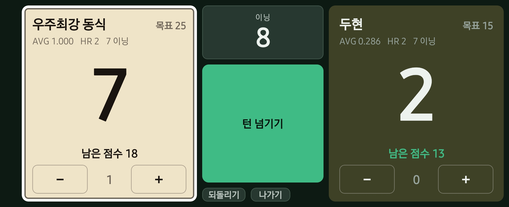

오늘의 경기를 정하고
종목과 대수, 인원을 고르세요.
선수와 목표점, 우리 모임의 규칙까지.
나의 당구, 한 판씩 쌓이다
내 폰이 당구 점수판이 됩니다.
3쿠션·4구의 득점과 이닝을 기록하고,
에버리지부터 함께 친 전적까지 한눈에.
회원가입 없이 · 광고 없이 · 기본 기능 무료

PLAY. RECORD. REPEAT.
점수를 누르고, 턴을 넘기고, 결과를 확인하세요.
익숙한 당구의 흐름 그대로입니다.
종목과 대수, 인원을 고르세요.
선수와 목표점, 우리 모임의 규칙까지.
큰 점수판으로 득점을 기록하세요.
잘못 눌렀을 때는 되돌리면 됩니다.
에버리지와 하이런, 이닝별 득점.
오늘의 경기를 다음 경기의 기준으로.

함께 친 상대와의 전적을 확인하세요.
그날 함께 친 경기를 모아 보고 공유하세요.
쌓인 기록을 바탕으로 다음 목표를 생각해 보세요.
THE FIELD GUIDE
처음 시작할 때도, 기록이 쌓였을 때도.
필요한 사용법을 여기서 찾아보세요.
정기 구독 없이, 한 번의 구매로.
일부 통계는 충분한 경기 기록이 필요합니다.
GOOD TO KNOW
점수판과 경기 저장, 최근 20경기 기록 열람은 무료입니다. 상대 전적, 핸디 제안, 모임 성적표, 최근 폼, 기본 기록 공유와 백업·복원도 무료로 사용할 수 있습니다.
자동 동기화 기능은 없습니다. 설정의 ‘백업 파일 내보내기’로 파일을 보관하고, 다른 기기에서 ‘백업 파일 불러오기’를 사용하세요. 불러온 기록은 기존 기록과 합쳐집니다.
백업 파일 불러오기는 경기·회원 기록을 가져오는 기능입니다. 구매 복원은 스토어의 기존 구매 내역을 확인해 유료 열람 권한을 되찾는 기능입니다. 구매를 복원해도 사라진 경기 기록이 돌아오는 것은 아닙니다.
YOUR NEXT GAME
설치 전 궁금한 점은 사용법과 FAQ에서 확인하세요.